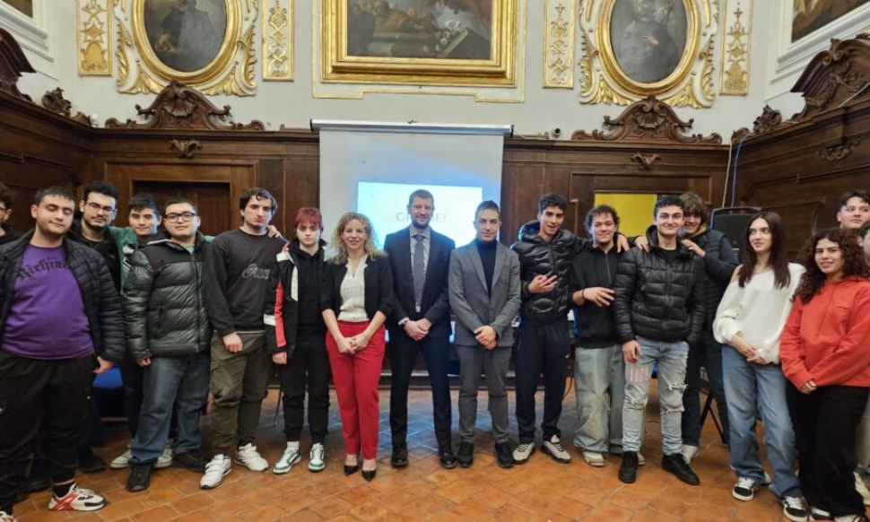
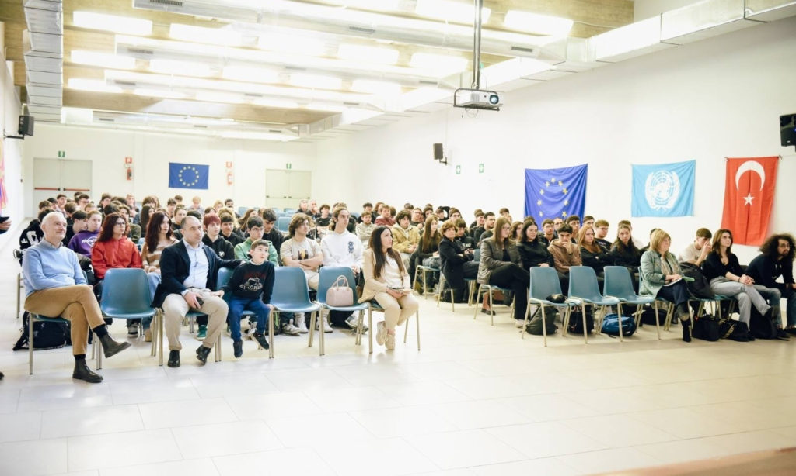
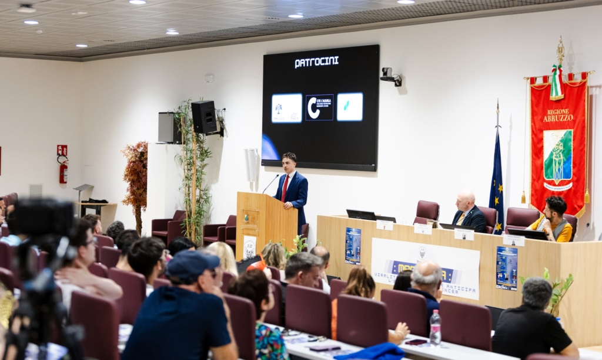

Masterclass
Tre edizioni di un percorso di seminari che avvicina gli studenti delle superiori all'eccellenza scientifica, tecnologica e umana.
Come fondatore e presidente dell'associazione culturale 3:33 porto scienza, tecnologia ed energia civica a L'Aquila. Il nome richiama le 3:32, l'istante del terremoto del 2009, e rappresenta rinascita e apertura al futuro.



Tre edizioni di un percorso di seminari che avvicina gli studenti delle superiori all'eccellenza scientifica, tecnologica e umana.
Nata dal simbolo delle 3:32 del terremoto dell'Aquila, l'associazione promuove rinascita, apertura al futuro e nuove tecnologie.
Concorsi e progetti civici, come il concorso giornalistico in memoria del dott. Mohamed Alì Zaraket, per l'integrazione tra culture.
La proposta «far adottare L'Aquila a Elon Musk» come laboratorio di rivoluzione tecnologica ha avuto eco nazionale.

All'IIS d'Aosta presentata la Masterclass 2026.

A L'Aquila, MasterClass 2025: Al Via la Terza Edizione.

Prende il via la terza edizione della MasterClass 2025

L'Aquila, al via la terza edizione di MasterClass 2025

MasterClass 2025, il via alla terza edizione aquilana

«Elon Musk adotti L'Aquila per un futuro sempre più digitale» — edizione cartacea del 22 ottobre 2024.

«Verso il futuro smart: una proposta mira a coinvolgere Elon Musk e le sue aziende» — edizione cartacea, ottobre 2024.

Associazione 3:33: Presidente Rocci, 'Facciamo adottare L'Aquila da Elon Musk'

Associazione 3:33, Presidente Rocci: 'Facciamo adottare L'Aquila da Musk'

'FACCIAMO ADOTTARE L'AQUILA DA ELON MUSK PER MODELLO RIVOLUZIONE TECNOLOGICA', LA PROPOSTA DI 3.33

Associazione 3.33: “Proponiamo l’adozione tecnologica della Città dell’Aquila da parte di Elon Musk'

L'Aquila. Cerimonia conclusiva per 'Masterclass 2024'

La cerimonia di chiusura del progetto formativo MasterClass 2024 - 20/05/2024

Si conclude la II edizione di MasterClass 2024: oggi la cerimonia di chiusura

Alla Sala Ipogea la cerimonia di chiusura del Progetto MasterClass 2024 con lectio magistralis di Massimo Claudio Comparini

MasterClass 2024 chiude con una Lectio Magistralis sul tema dello Spazio

L'Aquila, all'Emiciclo cerimonia di chiusura del progetto formativo MasterClass 2024

Sesto Seminario del MasterClass 2024, al centro Interazione e Creatività

MasterClass 2024: 'Criticality management' al centro del sesto seminario

L'Aquila: primo evento dedicato alla Scuola Normale Superiore di Pisa

MasterClass 2024: primo evento in Abruzzo interamente dedicato alla Scuola Normale Superiore di Pisa

Primo incontro a L'Aquila dedicato alla Scuola Normale Superiore di Pisa e presentazione MasterClass

Primo evento in Abruzzo interamente dedicato alla Scuola Normale Superiore di Pisa

Progetto MasterClass 2024 in Questura con i giovani e le forze dell'ordine

MasterClass 2024: un percorso formativo sulle droghe alla Questura dell'Aquila

Progetto MasterClass 2024 in Questura

Progetto MasterClass 2024 in Questura con i giovani e le forze dell’ordine

L'Aquila: progetto Masterclass 2024

L'Aquila: a Palazzo Fibbioni il terzo seminario di MasterClass 2024

Intelligenza Artificiale e robotica collaborativa, terzo seminario del percorso formativo MasterClass 2024

L'Aquila, terzo seminario in Masterclass 2024

L’Aquila, parte il secondo seminario del percorso formativo MasterClass 2024

Masterclass 2024, continuano gli incontri

Secondo Seminario del percorso formativo MasterClass 2024

MasterClass 2024: la fisica e l'ingegneria d'avanguardia al centro del secondo seminario

Primo Seminario del percorso formativo MasterClass 2024

Il progetto MasterClass 2024 entra nella sua fase formativa con il primo dei sette seminari

L’Aquila, Primo Seminario del percorso formativo MasterClass 2024

Nella sala Ipogea dell'Emiciclo il primo seminario nell’ambito del progetto Masterclass 2024

L'AQUILA: BOOM DI ADESIONI AL PROGETTO FORMATIVO MASTERCLASS 2024

Boom di adesioni al progetto MasterClass 2024. Sale il numero di partecipanti

A L'Aquila boom di adesioni al progetto formativo MasterClass 2024

Servizio televisivo sulle attività dell'associazione 3:33

L'AQUILA, MASTERCLASS 2023: 'GRANDE SUCCESSO, PERCORSO INTENSO', 6 MAGGIO EVENTO CONCLUSIVO

Masterclass, un'occasione unica per gli studenti aquilani

Droghe di ultima generazione, incontro informativo in Questura

'Gli algoritmi domineranno il mondo?', a L'Aquila l'iniziativa dell'associazione 3:33

A L'Aquila la prima masterclass di associazione 3:33 e Centro studi La Meta

L'Aquila, al via Masterclass per ispirare studenti superiori verso eccellenza

L'Aquila: presentato progetto MasterClass 2023

Associazione 3:33, un concorso giornalistico in memoria del medico libanese Mohamed Alì Zaraket

ASSOCIAZIONE '3.33': DA L'AQUILA PROGETTO SOCIALE DI RINASCITA, CONCORSO IN MEMORIA DOTTOR ZARAKET

Servizio televisivo sulle attività dell'associazione 3:33